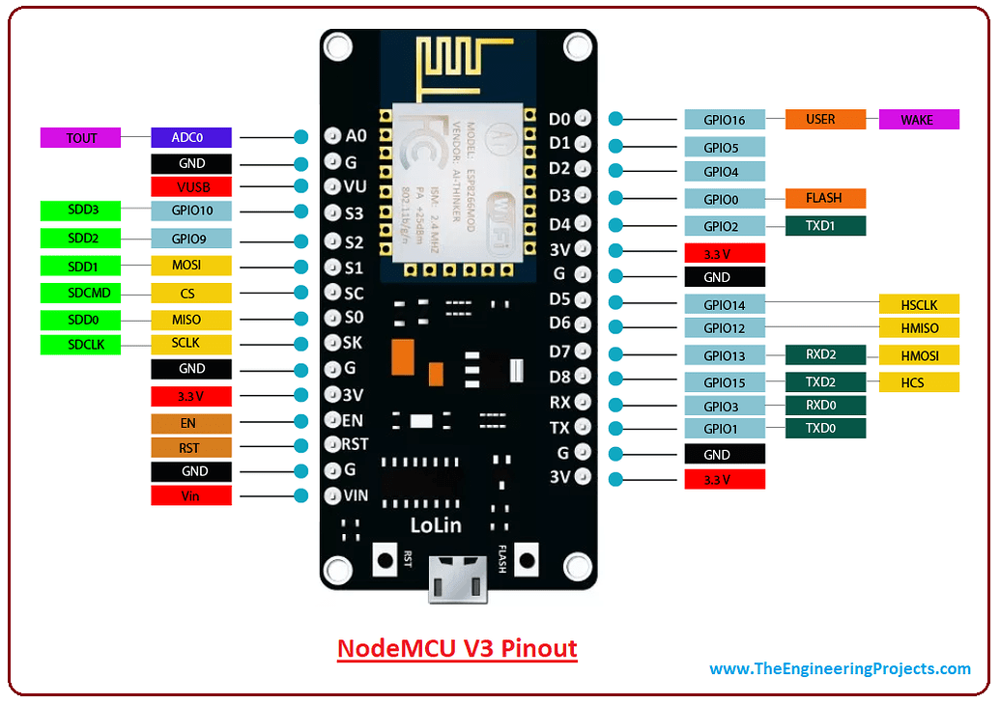

For this module ESP wroom32 that has both access to bluetooth and wifi connection.Serial communication protocal which is the UART,SPI and i2c.It has 38 pins 3 grounds and two ADC pins used as a Transmitter(TX) and Receiver(RX).Serial communication for the ESP32 where transfer of data can be series and parallel where he bits are either single or multiple.Sychronous serail where bits use the clock signal while asychronous no external clock signal.
SPI meaning Serial Periphal Interfaces.It uses separate clock and data lines, along with a select line to choose the device you wish to talk to.
The baud rate specifies how fast data is sent over a serial line. It's usually expressed in units of bits-per-second (bps).Then speed rane is always between 1200-115200.I2C meaning Inter-intergrated circuit where communication of two digital circuits chips allowed to communicate this includes SCL(Serial clock signal) and SDL(serial data).
ESP32 also works the same as raspberry pi pico,onboard LED is given a particular code and blinks.The ESP32 uses the Arduino IDE software to code.The following is the code that i wrote for the onboard LED.
int ledPin = 2;
void setup() {
pinMode(ledPin, OUTPUT);
}
void loop() {
digitalWrite(ledPin, HIGH);
delay(500);
digitalWrite(ledPin, LOW);
delay(500);
}
Traffic lights and binaty counter with ESP32.
int red = 2;
int amber = 4;
int green = 5;
void setup() {>
Serial.begin(115200);
pinMode(red,OUTPUT);
pinMode(amber,OUTPUT);
pinMode(green,OUTPUT);
}
void loop() {
digitalWrite(red, HIGH);
Serial.println("RED HIGH");
delay(100);
digitalWrite(red,LOW);
Serial.println("RED LOW");
delay(100);
digitalWrite(amber, HIGH);
Serial.println("AMBER HIGH");
delay(100);
digitalWrite(amber,LOW);
Serial.println("AMBER LOW");
delay(100);
digitalWrite(green, HIGH);
Serial.println("GREEN HIGH");
delay(100);
digitalWrite(green,LOW);
Serial.println("GREEN LOW");
delay(100);
}
Researched further, found out ESP32 can be used with other IoT devices such as LoRa.ESP32 needs a libraries files that are found in Tool-manage libraries then install.
Interfacing the ESP32 with the oled display.Adafruit _GFX for graphics and Adafruit_SSD1306.
#include
#include
#include
#include
#define SCREEN_WIDTH 128
#define SCREEN_HEIGHT 64
#define OLED_MOSI 23
#define OLED_CLK 18
#define OLED_DC 16
#define OLED_CS 5
#define OLED_RESET 17
Adafruit_SSD1306 display(SCREEN_WIDTH, SCREEN_HEIGHT,
OLED_MOSI, OLED_CLK, OLED_DC, OLED_RESET, OLED_CS);
void setup() {
Serial.begin(115200);
if(!display.begin(SSD1306_SWITCHCAPVCC, 0x3C)) { // Address 0x3D for 128x64
Serial.println(F("SSD1306 allocation failed"));
for(;;);
}
delay(2000);
display.clearDisplay();
display.setTextSize(1);
display.setTextColor(WHITE);
display.setCursor(0, 10);
// Display static text
display.println("Hello, world!");
display.display();
}
void loop() {
}